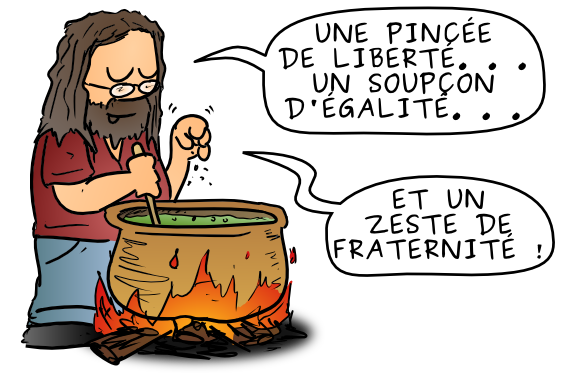
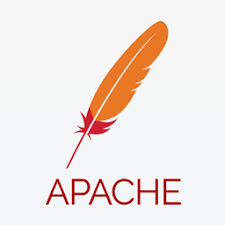
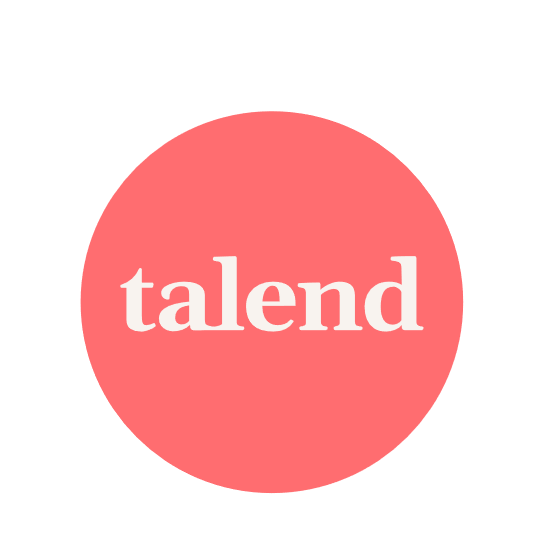

Aujourd’hui, un logiciel est considéré comme libre, au sens de la Free Software Foundation, s’il confère à son utilisateur quatre libertés :
la liberté d’exécuter le programme, pour tous les usages ;
la liberté d’étudier le fonctionnement du programme et de l’adapter à ses besoins ;
la liberté de redistribuer des copies du programme (ce qui implique la possibilité aussi bien de donner que de vendre des copies) ;
la liberté d’améliorer le programme et de distribuer ces améliorations au public, pour en faire profiter toute la communauté.
Avantage du logiciel libre

La qualité du logiciel est souvent proportionnelle au nombre de développeurs. Plus la communauté de développement s’étend, plus elle devient un gage de qualité et de réactivité. De la même manière, la communauté des utilisateurs, ayant comme rôle principal de faire remonter des dysfonctionnements et des suggestions, a une influence proportionnelle à sa taille.
Les logiciels libres ont, dans leur grande majorité, tendance à respecter les formats standards ouverts, ce qui favorise l’interopérabilité
Les logiciels libres peuvent être gratuits, ce qui permet aux petites entreprises de réduire les coûts d’acquisition et de maintenance des logiciels
Les logiciels libres peuvent être modifiés et personnalisés pour répondre aux besoins spécifiques de l’entreprise.
En utilisant des logiciels libres, les petites entreprises ne dépendent pas d’une seule société pour leur fournir des logiciels et peuvent choisir parmi plusieurs options.
L’utilisation des logiciels libres peut aider les employés à développer leurs compétences informatiques, ce qui est bénéfique pour l’entreprise.
Les logiciels libres permettent aux petites entreprises de collaborer facilement avec d’autres entreprises et organisations qui utilisent également des logiciels libres.
Les logiciels libres sont souvent conçus pour être évolutifs et adaptables, ce qui les rend parfaits pour les petites entreprises qui cherchent à grandir.
Les logiciels libres sont généralement soutenus par une communauté de développeurs et d’utilisateurs qui peuvent aider à résoudre les problèmes et à fournir des mises à jour.
Les logiciels libres disposent de leur code en libre accès, ce qui signifie que les utilisateurs peuvent voir et comprendre comment ils fonctionnent, ce qui peut aider à résoudre les problèmes plus rapidement
Les logiciels libres peuvent être maintenus et utilisés pendant de nombreuses années, même après que leur développement initial a été abandonné, contrairement aux logiciels propriétaires qui ont des mises à jour obligatoires et des coûts de mise à jour. Cela aussi permet aux petites entreprises de planifier leur utilisation à long terme sans avoir à se soucier de la fin de vie des logiciels.
Les logiciels libres encouragent l’innovation, car les développeurs peuvent utiliser les codes source pour créer de nouvelles fonctionnalités ou améliorer les fonctionnalités existantes.
Les logiciels libres sont généralement accessibles à tous, indépendamment de leur budget, ce qui permet aux petites entreprises de bénéficier des mêmes avantages que les grandes entreprises.
Les logiciels libres sont généralement multi-plateformes, ce qui signifie qu’ils peuvent être utilisés sur de nombreux systèmes d’exploitation différents, ce qui est bénéfique pour les petites entreprises qui utilisent différents types de matériel,
En utilisant des logiciels libres, les petites entreprises peuvent s’assurer qu’ils ne contribuent pas à une propriété intellectuelle restrictive et à la surveillance des utilisateurs, ce qui peut être le cas dans les logiciels propriétaires.
Les logiciels libres permettent aux petites entreprises de diversifier leur utilisation de logiciels, en utilisant des outils différents pour différentes tâches, plutôt que d’être limité à un seul ensemble d’outils.
Les logiciels libres permettent aux petites entreprises de prendre la responsabilité de leur propre utilisation de logiciels, en les modifiant et en les utilisant de manière responsable, plutôt que de dépendre d’une société tierce pour les fournir et les gérer.
Les logiciels libres peuvent permettre aux petites entreprises de réaliser des économies importantes, en évitant les coûts de licence et de mise à jour des logiciels propriétaires.
Les logiciels libres ont tendance à être testés et vérifiés par une communauté de développeurs et d’utilisateurs, ce qui peut augmenter leur fiabilité par rapport aux logiciels propriétaires qui ne sont généralement testés que par une équipe interne.
Le noyau LINUX
En 1991, l’étudiant finlandais Linus Torvalds, indisposé par la faible disponibilité du serveur informatique UNIX de l’université d’Helsinki, entreprend le développement d’un noyau de système d’exploitation, qui prendra le nom de « noyau Linux ».
Linux n’aurait pu se développer sans la présence de protocoles standardisés utilisés sur Internet. Un bon nombre de logiciels libres sont d’ailleurs des implémentations de référence, comme Apache.
La fondation Apache

La fondation Apache est une communauté décentralisée de développeurs qui travaillent sur ses projets open source. Les projets Apache sont caractérisés par un mode de développement collaboratif fondé sur le consensus ainsi que par une licence de logiciel ouverte et pragmatique. Chaque projet est dirigé par une équipe de contributeurs auto-désignée et on ne devient membre de la fondation qu’après avoir contribué activement aux projets Apache.
Dans le BBL, nous allons nous consacrer sur
Apache Camel
Apache Karaf
Apache Cassandra
Aapache ActiveMQ
Apache Kafka
Le projet Docker
Docker est développé par Solomon Hykes pour un projet interne de dotCloud, une entreprise française proposant une plate-forme en tant que service, avec les contributions d’Andrea Luzzardi et Francois-Xavier Bourlet, également employés de dotCloud. Docker est une évolution basée sur les technologies propriétaires de dotCloud, elles-mêmes construites sur des projets open source.
Docker est distribué en tant que projet open source à partir de mars 2013.
L’objectif d’un conteneur est le même que pour un serveur dédié virtuel : héberger des services sur un même serveur physique tout en les isolant les uns des autres. Un conteneur est cependant moins figé qu’une machine virtuelle en matière de taille de disque et de ressources allouées.
Un conteneur permet d’isoler chaque service : le serveur web, la base de données, des applications pouvant être exécutées de façon indépendante dans leur conteneur dédié, contenant uniquement les dépendances nécessaires. Chaque conteneur peut être relié aux autres par des réseaux virtuels. Il est possible de monter des volumes de disque de la machine hôte dans un conteneur.
Docker vous permet d’envoyer du code plus rapidement, de standardiser les opérations de vos applications, de migrer aisément du code et de faire des économies en améliorant l’utilisation des ressources. Avec Docker, vous obtenez un objet unique que vous pouvez exécuter n’importe où de manière fiable.
Le logiciel Talend

Talend Open Studio est un logiciel libre sous la licence Apache.
Il va nous permettre de dévelloper des routes sous Apache Camel afin d’intégrer les divers message dans :
Apache Cassandra
Aapache ActiveMQ
Apache Kafka
La route développée va être déployée dans Apache Karaf.
Quid de Windows
Simple, Docker ne fonctionne pas sur Windows.
Pour pouvoir utiliser Docker sur Windows, il va falloir installer Linux sur Wndows.
Linux 1 - 0 Windows
On a jamais vu la réciproque, c’est à dire quelqu’un installer windows sur Linux
Création d’un container Apache Cassandra
Etape 1 : Mettre dans un dossier le fichier docker-compose.yml avec le contenu suivant